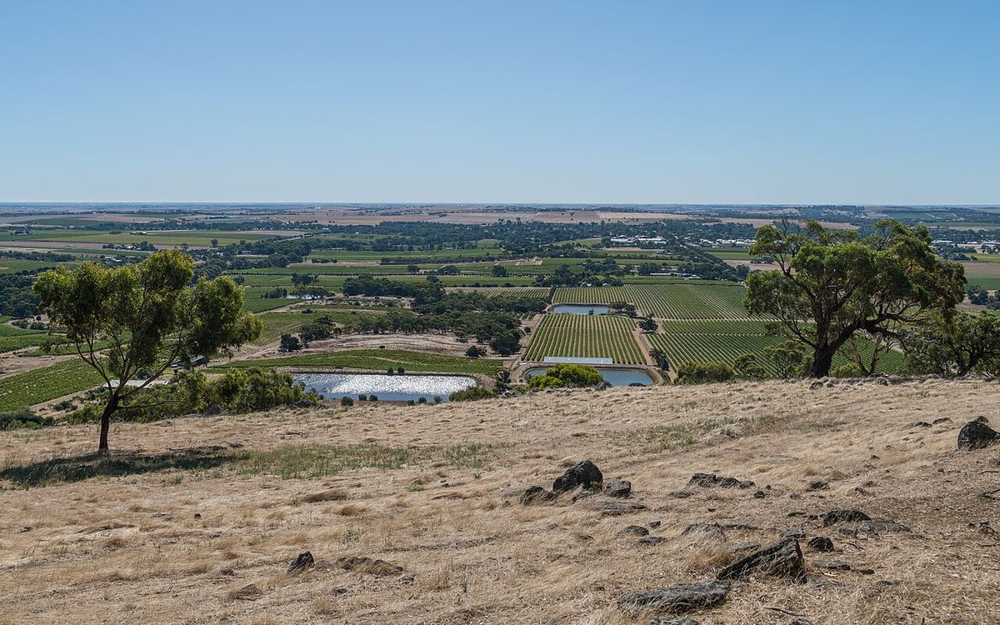
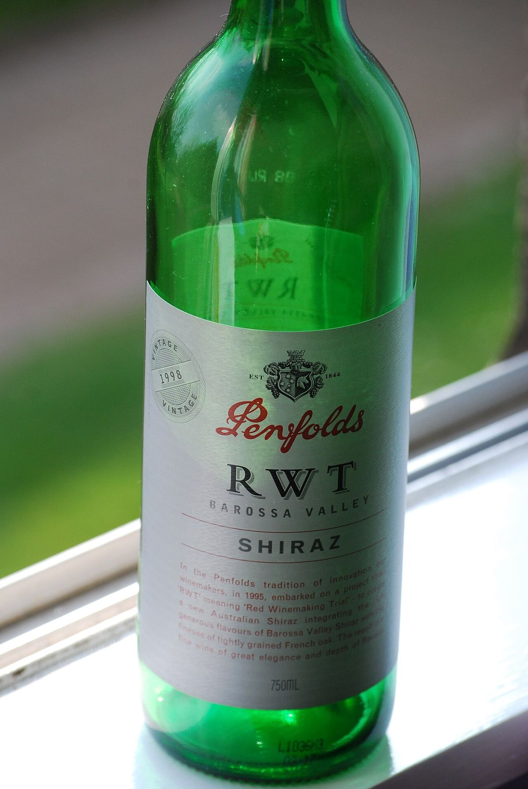

RED
The Barossa Valley, north-east of Adelaide, is Australia’s most iconic region for Shiraz. It preserves very old own-rooted vines and a strong cultural heritage from settlers of German origin.

The Barossa Valley lies about sixty kilometres north-east of Adelaide, in South Australia. It was settled in the 1840s by British immigrants and, above all, by Lutherans from Silesia and Prussia in search of religious freedom. These settlers founded villages such as Bethany, Tanunda and Lyndoch, planted vineyards and orchards and left a mark that can still be seen in the churches, the food and the surnames of many winegrowing families. During the twentieth century the valley was the country’s great centre for fortified wine production, and later it became the heart of the table wine industry, home to some of Australia’s largest companies.
Like the rest of South Australia, the Barossa was never affected by phylloxera. It therefore still has vines of Shiraz, Grenache and Mataro (Mourvèdre) planted in the nineteenth century on their own roots. In the 1980s many of these old vines were pulled out for lack of demand, but later interest in old-vine wines saved many others. The region has created an Old Vine Charter that classifies vineyards by age, with categories ranging from vines at least 35 years old to those over 125.
The climate is warm and dry, Mediterranean with continental touches: hot summers with somewhat cooler nights, little rain during the ripening period and a risk of water stress. The valley floor, at around 250-300 metres above sea level, is warmer than the surrounding hills. Soils are very varied: sands, sandy loams and red and brown clays over limestone or clay subsoils, with marked differences between the north of the valley, around Ebenezer and Moppa, and the south, towards Lyndoch.
Shiraz is the dominant variety and gives highly concentrated reds, with ripe black fruit, notes of chocolate, spice and liquorice, rounded tannins and often ageing in American or French oak barrels. Many producers now seek less extracted styles with less oak. Old-vine Grenache and Mataro give varietal reds or Rhône-style blends known as GSM. Cabernet Sauvignon and Semillon whites are also made, along with an old tradition of fortified wines. Together with the neighbouring Eden Valley, the Barossa forms the Barossa wine zone, and producers commonly blend grapes from both regions.
